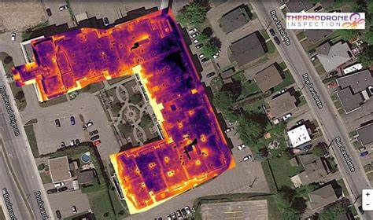

Détection de mines anti-personnel

Notre drone utilise une technologie de détection de métaux de pointe pour identifier les gisements d'or dans les cours d'eau et les zones forestières denses. Nous avons également développé une méthode innovante de cartographie en temps réel pour aider à localiser les gisements avec une précision élevée, facilitant ainsi l'extraction d'or pour nos clients.
Détection d'or

Nous utilisons des capteurs de haute précision pour identifier les mines enfouies dans le sol, même dans des environnements difficiles comme les zones rurales ou les terrains accidentés. Notre technologie avancée de traitement d'image et de vision par ordinateur permet à notre drone de repérer les mines avec une précision élevée, minimisant ainsi les risques pour les équipes de déminage et les populations locales.
Cartographie agricole

Notre drone est équipé d'un système de cartographie de haute précision qui peut capturer des images détaillées des champs d'agriculture. Nous utilisons des algorithmes avancés pour analyser ces images et produire des cartes précises de la croissance des cultures, de l'humidité du sol et d'autres données utiles pour les agriculteurs. Ces cartes peuvent aider les agriculteurs à optimiser leur production et à améliorer leur rentabilité.
Sauvetage avec Détection Thermique
Notre drone est équipé d'une caméra thermique de haute précision qui peut détecter la chaleur corporelle humaine, même dans l'obscurité totale. Cette technologie de pointe est utilisée pour localiser les personnes perdues ou en détresse dans les zones rurales ou les zones de catastrophe naturelle. Notre drone peut fournir une vue aérienne en temps réel des zones de recherche, aidant les équipes de secours à localiser rapidement les personnes en danger et à leur porter secours.